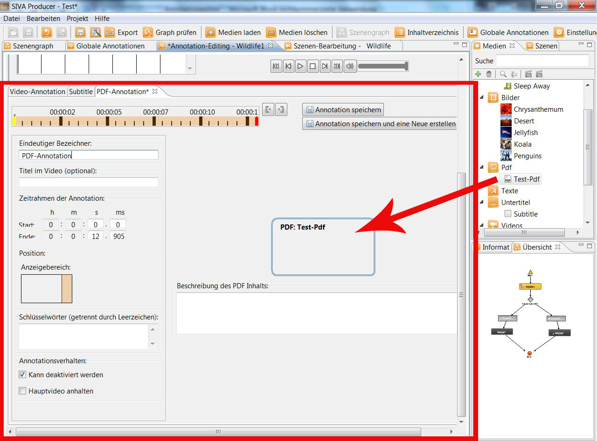
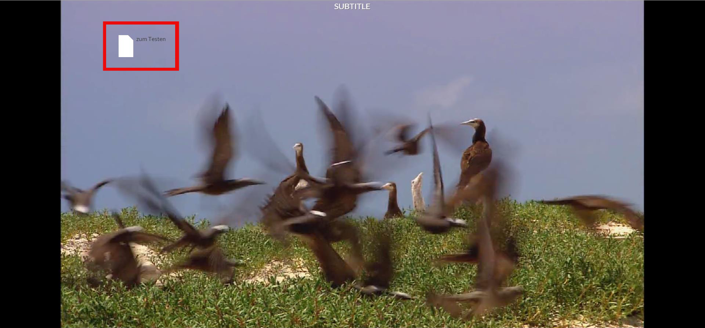

Wurde eine neue PDF-Annotation erstellt, so kann ein PDF-Dokument per Drag and Drop aus dem Medien-Repository in den Arbeitsbereich
gezogen werden.

Nun kann eine Beschreibung des PDF-Inhalts, die fest mit der Annotation verbunden ist, erstellt werden.
Wurde der linke Anzeigebereich, also direkt im Bild, ausgewählt, so könnte dies im fertigen Projekt wie folgt aussehen:

Durch einen Klick auf das Symbol öffnet sich das PDF in einem externen Fenster.
Für weitere Details siehe:
"Erstellen von Annotationen"